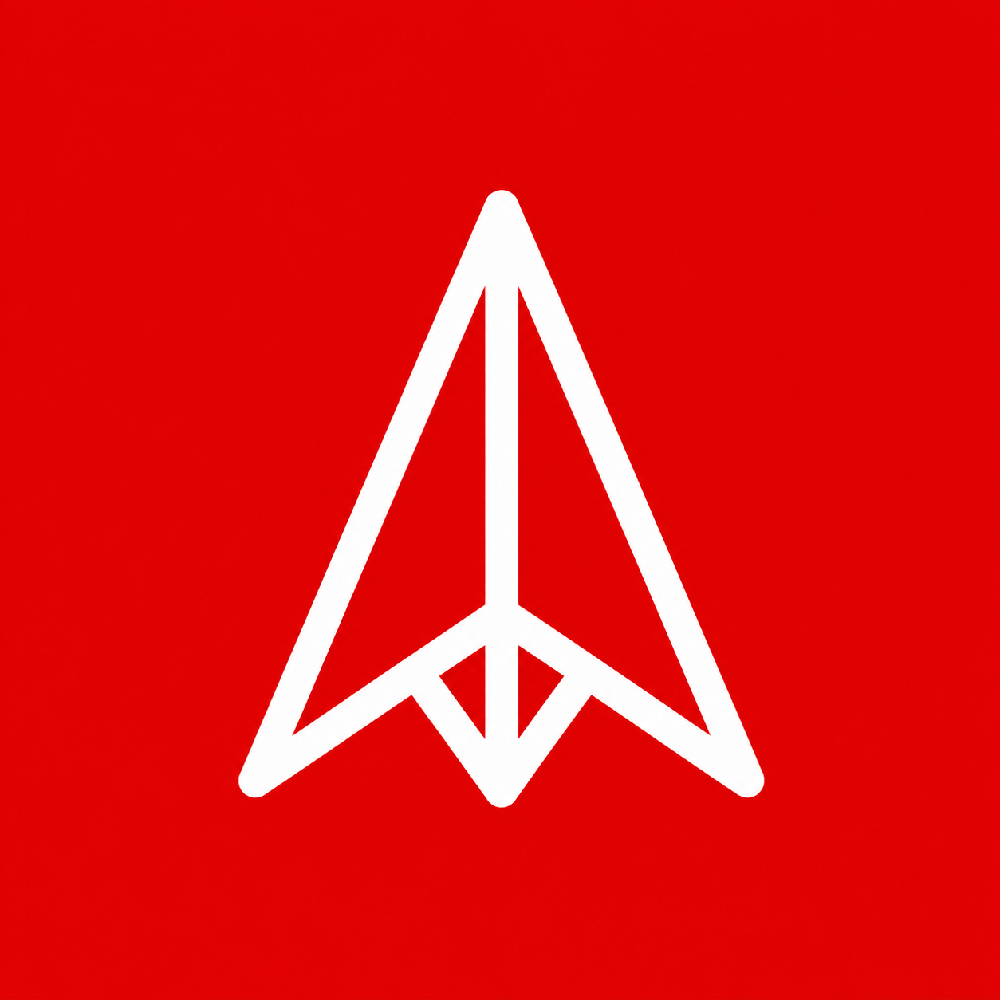

The only selective club for founders and builders that admits on shipped proof and sustained obsession.
Brand Identity System
Version 1.0 · 2026
Brand identity system for a selective club of founders and builders.
Creative north star
The Living Signal
Membership
Founders and builders only
00 — Overview
This book owns who we are, how we sound, and which assets make us recognizable. Product truth lives in PRODUCT.md. Production tokens live in DESIGN.md.
and the proof is the artifact.
One master brand. Events, formats, and future products are descriptors under First Artifact — never independent sibling brands.
01 — Strategy
First Artifact is a selective club for founders and builders only. It concentrates people whose defining trait is obsession expressed through action: they build, ship, learn, and persist — then meet peers at the same density.
Obsession beats talent because obsessed people keep acting. The artifact is the proof. Membership is founders and builders only.
Not a broad networking group. Not a generic tech community. Distinction is a deliberately high, evidence-based acceptance bar. Exclusivity is functional — it protects density and creates a credible signal.
Rooms that reward pitch, potential, and proximity over work. Soft networks that dilute density. Open “anyone in tech” clubs that blur builders with spectators.
| Ideal | How it shows up |
|---|---|
| Differentiation | Evidence bar + Living Signal system; fails Swap Test if a competitor logo still “fits” |
| Authenticity | Honest placeholders, explicit unknowns, no fabricated proof |
| Coherence | Red / white / near-black fields, lowercase declarations, flat surfaces |
| Flexibility | Same mark and palette across header, manifesto, social, future formats |
| Commitment | Density over volume; the bar does not loosen for growth vanity |
02 — Audience
No other member segments. Both must be proven people in technology with unusual agency — already shipped something meaningful, still moving without manufactured momentum.
Building or running a venture. The work is the company. Obsessed with a problem worth founding around.
Shipping product, systems, or tools with real traction or public weight. The work is the artifact.
| Not members | Why |
|---|---|
| Investors (as primary identity) | Dealflow is not the membership purpose |
| Recruiters | Extraction posture dilutes the room |
| Pure operators / advisors without a build practice | No shipped proof at the center |
| Students without shipped work | Potential is not evidence |
| Spectators / “anyone in tech” | Blurs builders with audience |
High agency — you notice what needs doing and move it.
Obsession — the personal story that keeps you returning to the same problem.
Traction — something real is already moving: shipped product, users, revenue, or public weight.
Adjacent roles may appear at carefully managed future touchpoints. They do not redefine who the club is for.
03 — Personality & voice
Fun, playful, experimental, and strong — never corporate-prestige theater and never soft motivational fluff. A transmission from people already in motion.
| Trait | Means | Does not mean |
|---|---|---|
| Direct | Short sentences; name the standard | Rudeness or gatekeeping theater |
| Selective | Clear bar, scarce access | Elitism for its own sake |
| Energetic | Motion, scale, signal red | Glow, hype copy, emoji |
| Honest | State intended vs. proven | Fake metrics or invented members |
| Irreverent | Lowercase GoCake declarations | Sloppy grammar as personality |
| Role | Signature line |
|---|---|
| Belief | Obsession beats talent everytime |
| Proof hinge | and the proof is the artifact. |
| Hero charge | obsess |
| Principle stream | obsess · build · ship · prove · agency · evolve · purpose · artifact |
| Closing | Your move |
04 — Logo system
Angular white stroke on a signal-red square — a beacon or first stake. Validate black-and-white first; color second.

Production tileClear space ≥ ¼ mark height
| Asset | Path | Role |
|---|---|---|
| Production tile | public/brand/first-artifact-logo.png | Favicon, square lockups |
| Portable vector | public/brand/first-artifact-mark.svg | Export & reuse |
| Inline UI mark | components/brand-mark.tsx | currentColor + strokeWidth |
05 — Color
Signal red is the public beacon. White is the editorial reading surface. Near-black supplies authority. Gray is infrastructure only — never a fourth visual world.
Preserve the hard white interruption between hero and manifesto. Do not soften into gray or glass. No secondary accent family at launch.
06 — Typography
GoCake is rare and authored — the audible voice. Source Sans 3 is operational and trustworthy. Never set long reading text in GoCake.
Hero charge, marquee, section declarations, F.A. signature. Limited glyph set — fall back for unsupported characters.
Most rooms reward talk. First Artifact is for founders and builders who move from uncertainty to a shipped thing. Bring the work, the question you cannot drop, and find peers who compound both.
| Level | Spec |
|---|---|
| Hero charge | GoCake, oversized stack, ~0.85 line-height |
| Section declaration | GoCake ~51–96px, ~0.88 lh, 10–14 characters/line |
| Manifesto title | Source Sans Semibold, large belief line |
| Lead / body | Source Sans Regular 16–20px, relaxed leading |
| Labels | Source Sans Semibold 12–14px, tracked uppercase |
public/fonts/gocake/Gocake.ttf
public/fonts/source-sans-3/*.woff2
Keep LICENSE files beside distributed fonts.
07 — Distinctive assets
Build fame and uniqueness. These cues should trigger First Artifact before the name is read.
| Asset | Uniqueness | Fame plan |
|---|---|---|
| Signal red field | High | Own the red transmission everywhere |
| Angular mark | High | Never redraw |
| Lowercase GoCake | High | Keep rare |
| 40px hero grid | Med–High | Hero-only signature |
| White marquee fold | High | Protect red→white→red |
| Editorial 1px rows | Medium | Not cards |
| Circular member signals | Medium | Five-signal constellation |
08 — Imagery, motion & touchpoints
| Touchpoint | Identity expression |
|---|---|
| Launch site / | Full Living Signal system — primary brand theater |
| Fixed header | Stable signal red, mark + lowercase name, dark Apply |
| Discord | Same voice; peer room, not funnel gimmick |
| Application | Six evidence fields; honest unavailable/copy states |
| Favicon / OG | Red tile mark |
| Future events | “First Artifact hacker house” descriptors — no new logos |
| Email / docs | Source Sans body; GoCake sparingly for titles |
New surfaces inherit this system. They do not invent sibling brands. Formats stay descriptors under First Artifact.
09 — Messaging & governance
| Doc | Authority |
|---|---|
| BRAND.md | Strategy, voice, logo, distinctive assets |
| PRODUCT.md | Users, constraints, evidence policy |
| DESIGN.md | Tokens, components, a11y, motion |
| asset-manifest.md | Asset provenance & replacement |
10 — One-page brief
The Living Signal — for founders and builders only.
The only selective club for founders and builders that admits on shipped proof and sustained obsession.
Obsession beats talent everytime — and the proof is the artifact.
Signal red / white / near-black · angular mark · lowercase GoCake + Source Sans 3 · flat editorial · transmission fold.
Direct, selective, energetic, honest, playfully strong.
Talk-first rooms. Diluted “anyone in tech” networks.
Show the work. Apply — or join the Discord. Your move.
Brand Identity System · v1.0